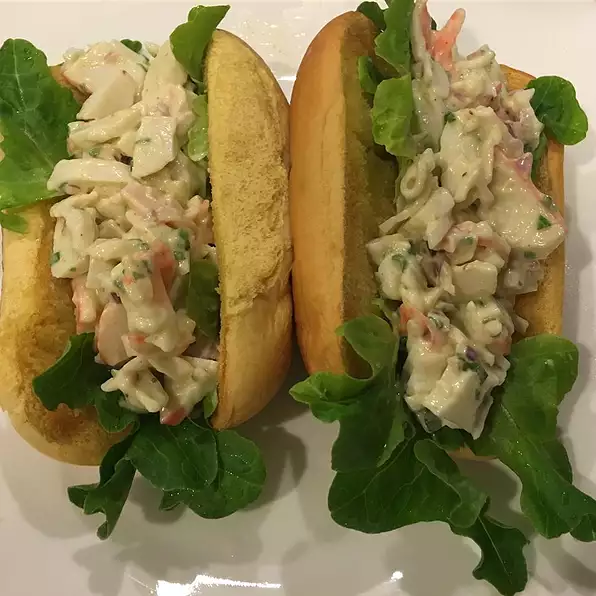

Seafood Sandwich

Description
This awesome sandwich is reminiscent of the famous Maine Lobster Roll, and made with ingredients that are easy to find.
Ingredients
- 1 package imitation crab or lobster meat
- ¼ cup mayonnaise
- 1 tablespoon finely chopped red onion
- 1 teaspoon lemon juice
- ¼ teaspoon OLD BAY® Seasoning
- 1 tablespoon butter, softened
- 2 hot dog buns
Steps
- In a medium bowl, flake the crabmeat, and mix in mayonnaise, onion, lemon juice and Old Bay seasoning. Cover and refrigerate for 30 minutes to allow the flavors to mingle.
- Spread butter on the inside of the hot dog buns, and toast under the broiler. Fill buns with the crab salad, and serve.